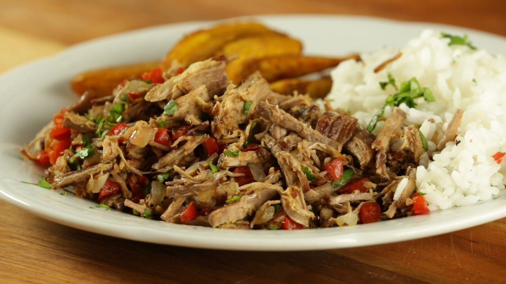
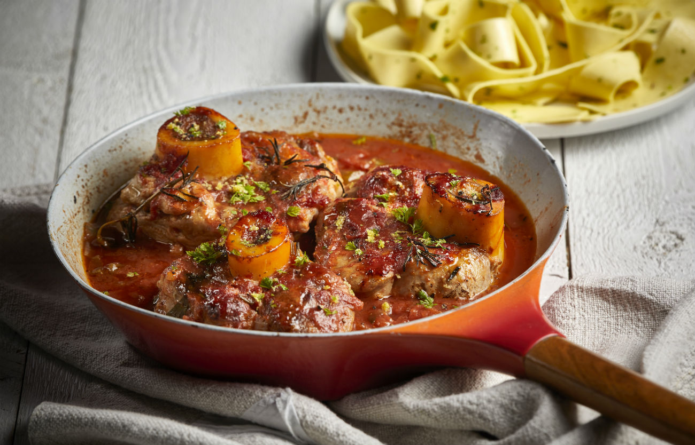

Carne mechada

Ingredientes:
- 500 gramos de Falda de la vaca
- 1 unidad de Pimiento rojo
- dientes de Ajo
- 2 cucharadas soperas de Salsa inglesa
- 1 rama de Cilantro
- 2 unidades de tomates rojos
- 1 pizca de Pimienta
- 1 pizca de Sal
- 30 mililitros de Aceite de girasol
- 1 cucharadita de Comino en polvo
- 1 unidad de cebolla blanca
Elaboración:
- Alistar todos los ingredientes.
-
Cortar la carne en trozos grandes, sazonarla con sal, pimienta y comino en polvo. Sellar la carne en la olla de presión con aceite hasta que este dorada por todos los lados.
-
En la misma olla de presión, con más aceite, sofreír la cebolla y el pimiento durante unos minutos.
-
Agregar el tomate sin piel, cortado en cubos pequeños y el ajo macerado. Sofreír unos minutos más hasta que suelte sus jugos el tomate, salpimentar.
-
Añadir la salsa inglesa y de nuevo la carne, mezclar muy bien para que la carne se impregne con el sofrito.
-
Agregar el caldo de res hasta que cubra la carne o agua. Agrega también la rama de cilantro y una poco más de comino, tapar la olla de presión y cocinar durante 1 hora y media.
-
Cuando la carne salga de la olla, con la manos o con un tenedor, deshebrar.
-
Volver añadir la carne a la olla y mezclar con la salsa que se forma en la cocción, servir la carne mechada venezolana y acompañar con arroz blanco y plátano frito.
Osso buco

Ingredientes:
- 125 g de harina de trigo
- Sal y pimienta negra
-
6 piezas de osobuco que pesen alrededor de 3 kg (cada pieza debe tener un grosor de 2,5 cm aproximadamente)
- 120 ml de aceite de oliva
- 1 cebolla blanca, picada gruesamente
- 1 zanahoria, picada
- 2 dientes de ajo, picados
- 375 ml de vino tinto
- 185 gr de tomates picados en cubos
- 1.25 l de caldo de carne
Elaboración:
-
La masa se prepara intentando obtener una masa bastante dura. Si los huevos no son suficientes, agregue agua fría.
- Todos los quesos se rallan en un recipiente grande.
-
El jamón se corta en dados y se combina con la carne picada y el pan hasta la masa, después de haberlo remojado en leche y bien exprimido. Luego se usan los huevos para mezclar todo, partiéndolos en un plato uno a la vez porque, ojo, la masa debe estar
dura.
-
La manteca se pasa alrededor de la sartén y se cubre con una hoja muy gruesa (del grosor de una moneda).
-
Vierta el relleno en la sartén y con una parte de la masa sobrante, prepare tiras del mismo largo que la sartén que se utilizarán para crear un denso entrelazado de masa en la superficie.
- Hornea a temperatura media (unas 3 horas de cocción).
-
Se sirve muy caliente cortado en rodajas, después de haberlo dado la vuelta.